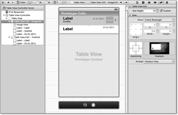

Zum Online-Shop
Zum Online-Shop
4.5 Tableviews und Core Data
Sie haben jetzt ein Grundgerüst für die Erstellung neuer und die Aktualisierung bestehender Tagebucheinträge. Sie brauchen im Tagebuch eine Möglichkeit, sich alle Einträge anzeigen zu lassen. Dazu ist ein Tableview am besten geeignet. Er zeigt alle Einträge des Fototagebuchs an.
4.5.1 Tableviews
Tableviews eignen sich besonders für die Anzeige großer Mengen gleichartiger Daten. Dabei können Sie die Daten in Abschnitte unterteilen. Tableviews sind ein gutes Beispiel dafür, wie Sie das Aussehen und Verhalten eines Views verändern können, ohne von der Viewklasse ableiten zu müssen. Jeder Tableview besitzt zwei Delegates, und die Zuständigkeit zwischen dem View und den Delegates ist folgendermaßen aufgeteilt:
- Die Klasse UITableView übernimmt den Aufbau, die Darstellung und die Gestensteuerung der Tabelle. Die Tabelle besteht aus einer Spalte, die beliebig viele Zellen enthalten kann. Der Tableview kann die Zellen in Abschnitte zusammenfassen.
- Die Datenquelle implementiert das Protokoll UITableViewDataSource und liefert die Anzahl der Abschnitte sowie die Anzahl der Zeilen pro Abschnitt. Sie ist außerdem zuständig für die Erzeugung und Konfiguration der Views für die Zellen der Tabelle.
- Das Delegate implementiert das Protokoll UITableViewDelegate und stellt Methoden für die Ereignisverarbeitung des Tableviews bereit. Beispielsweise können sich Sie damit über die Auswahl von Zellen informieren lassen.
Leider ist die Unterscheidung zwischen der Datenquelle und dem Delegates nicht ganz so strikt. So besitzt zum Beispiel das Delegate Methoden, mit denen Sie die Höhe der Zellen oder das Aussehen der Abschnittsheader und -footer festlegen können. Sowohl die Datenquelle als auch das Delegate implementieren Sie in der Regel in dem Viewcontroller, der den Tableview verwaltet. Generell sind Viewcontroller ein guter Platz, um die Delegates der Views zu implementieren.
Wenn Sie eine Datenquelle für einen Tableview anlegen, müssen Sie in der Regel drei Methoden überschreiben. Mit der Methode numberOfSectionsInTableView: legen Sie fest, in wie viele Abschnitte Sie Ihre Zellen unterteilen wollen. Die Anzahl der Zellen innerhalb eines Abschnitts erfragt der Tableview über die Methode tableView:numberOfRowsInSection:.
Tableviews sind übrigens hinsichtlich des Speichers optimiert. Im besten Fall brauchen Sie nur ungefähr so viele Views für Zellen, wie auch tatsächlich auf einmal auf dem Bildschirm dargestellt werden können. Außerdem schmeißt der Tableview aus der Ansicht gescrollte Zellen nicht weg, sondern merkt sie sich für eine spätere Verwendung. Durch diesen nachhaltigen Umgang mit Zellen und deren Daten können Tableviews auch Datenmengen anzeigen, deren Speicherbedarf wesentlich größer als der verfügbare Hauptspeicher des Geräts ist. Das ist natürlich nur möglich, wenn der Tableview immer nur einzelne Zellen von der Datenquelle anfordert. Dazu dient die Methode tableView:cellForRowAtIndexPath:.
Der zweite Parameter dieser Methode hat die Klasse NSIndexPath und enthält die Position einer Zelle oder eines Elements in der Tabelle. Auf diese Werte können Sie über die Propertys section und row zugreifen. Eine typische Implementierung der Delegatemethode sieht folgendermaßen aus:
- (UITableViewCell *)tableView:(UITableView *)inTableView
cellForRowAtIndexPath:(NSIndexPath *)inIndexPath {
NSString *theIdentifier = @"CellIdentifier";
UITableViewCell *theCell = [inTableView
dequeueReusableCellWithIdentifier:theIdentifier];
if(theCell == nil) {
theCell = [[[UITableViewCell alloc] initWithStyle:...
reuseIdentifier:theIdentifer] autorelease];
// Zelle initialisieren; z. B. Subviews hinzufügen
}
// Zelle konfigurieren: Anzeigewerte setzen
return theCell;
}
Listing 4.39 Erzeugung einer Tabellenzelle
Wie bereits erwähnt, können Tabellen die erzeugten Zellen wiederverwenden. Dabei müssen die Zellen nicht alle gleich aussehen. Die verschiedenen Arten von Zellen unterscheidet der Tableview anhand frei wählbarer Kennungen (in Listing 4.39 ist das CellIdentifier). Dabei haben Zellen der gleichen Art aber immer die gleiche Kennung, und unterschiedliche Zellarten sollten natürlich unterschiedliche Kennungen verwenden.
Sie müssen zuerst die Tabelle fragen, ob sie noch eine freie Zelle der gewünschten Art hat. Falls sie keine mehr hat, liefert die Methode dequeueReusableCellWithIdentifier: den Wert nil zurück, und Sie müssen eine neue Zelle erzeugen. Die Zellen haben immer die Klasse UITableViewCell oder eine Unterklasse davon.
Auf der DVD finden Sie das Beispielprojekt TableView, das eine Tabelle mit unterschiedlichen Zellarten demonstriert. Die Zellarten unterscheiden sich allerdings nur durch unterschiedliche Textfarben. Die Zellen enthalten außerdem einen Zähler, der ihre Erzeugungsreihenfolge angibt. Durch Scrollen können Sie feststellen, dass gleiche Zähler in unterschiedlichen Zellen auftreten beziehungsweise die Zellen des gleichen Elements unterschiedliche Zähler haben können. Der Tableview verwendet die Zellen also mehrfach für unterschiedliche Elemente. Sie können an diesem Beispiel also sehen, wie der Tableview die Zellen wiederverwendet.
4.5.2 Tabellenzellen gestalten
Für viele Anwendungsfälle reichen die Darstellungsmöglichkeiten der Klasse UITableViewCell allerdings nicht aus. Sie können das Aussehen dieser Klasse über deren Property contentView anpassen. In diesen View können Sie nahezu beliebige eigene Views legen. Natürlich können Sie diese Views durch Programmanweisungen erzeugen. Es ist aber auch möglich, dafür den Interface Builder zu verwenden. In der Elementbibliothek finden Sie dafür einen View der Klasse UITableViewCell, den Sie als Basis für Ihre eigenen Zellen verwenden können. Sie sollten auch jeder Zelle, die Sie im Interface Builder erstellen, eine eindeutige Kennung über deren Attributinspektor geben. Die Zelle können Sie dann wie jeden anderen View auch konfigurieren und mit Subviews füllen. Der Interface Builder legt die Subviews allerdings immer im Contentview der Zelle ab.
Sie können natürlich die Views über Ihren Programmcode zusammenbauen, was aber recht mühsam werden kann. Eine andere Möglichkeit ist das Laden der Zelle aus einer NIB-Datei.
Es gibt zwei grundsätzliche Möglichkeiten, wie Ihre Datenquelle diese Zellen laden kann. Für die einfachere Möglichkeit legen Sie die Zelle in einer eigenen XIB-Datei ab. Die Datenquelle lädt diese Datei jedes Mal, wenn Sie eine neue Zelle erzeugen möchte. Sie können beliebige NIB-Dateien über die Kategorie NSBundle(UINibLoadingAdditions) und die darin enthaltene Methode loadNibNamed:owner:options: laden. Der Block der Bedingung in Listing 4.39 kann dann so aussehen:
NSBundle *theBundle = [NSBundle mainBundle];
NSArray *theViews = [theBundle loadNibNamed:@"Cell"
owner:self options:nil];
theCell = [theViews objectAtIndex:0];
Listing 4.40 Erzeugung einer Zelle über eine NIB-Datei
Die Methode loadNibNamed:owner:options: liefert alle Objekte, die die NIB-Datei definiert, als Array zurück. Der File’s Owner und der First Responder gehören aber nicht dazu. Wenn Sie diesen Weg verwenden, sollte die Zelle immer als erstes Objekt in der NIB-Datei liegen.
Als Eigentümer können Sie den Viewcontroller verwenden. Das ist einfach self, wenn der Viewcontroller die Datenquelle des Tableviews implementiert. Dadurch können Sie die Controls der Zelle direkt mit den Actions des Viewcontrollers verbinden. Allerdings müssen Sie meistens in den Actions die Zelle oder deren Indexpath ermitteln, wobei Ihnen die Methode indexPathForRowAtPoint: des Tableviews hilft:
- (IBAction)action:(id)inSender forEvent:(UIEvent *)inEvent {
UITableView *theTableView = ...;
UITouch *theTouch = inEvent.allTouches.anyObject;
CGPoint thePoint = [theTouch locationInView:theTableView];
NSIndexPath *thePath = [theTableView
indexPathForRowAtPoint:thePoint];
...
}
Listing 4.41 Bestimmung des Indexpaths in einer Action-Methode
| Hinweis |
|
Sie sollten aber in der XIB-Datei keine Outlets setzen, da Sie ansonsten mit jedem Laden die Outlets des Viewcontrollers überschreiben. Sie können also über solche Outlets immer nur auf die Views der zuletzt geladenen Tabellenzelle zugreifen. |
Der PhotoDiaryViewController lädt einen Prototyp für die Zellen zusammen mit seinem View. Er legt also die Zellen nicht in einer eigenen NIB-Datei ab. Stattdessen erzeugt er die neuen Zellen aus diesem Prototyp, indem er in der Methode viewDidLoad den Prototyp in ein NSData-Objekt serialisiert. Neue Zellen erzeugt er durch Deserialisierung dieses Datenobjekts, das er in der privaten Property cellData hält.
- (void)viewDidLoad {
[super viewDidLoad];
...
self.cellData = [NSKeyedArchiver
archivedDataWithRootObject:self.cellPrototype];
...
}
- (DiaryEntryCell *)makeDiaryEntryCell {
return [NSKeyedUnarchiver
unarchiveObjectWithData:self.cellData];
}
Listing 4.42 Serialisierung und Deserialisierung von Tabellenzellen
Dieses Vorgehen hat gegenüber dem direkten Laden aus NIB-Dateien Vorteile. Sie benötigen keine eigene NIB-Datei für die Zelle und können diese über ein Outlet in der NIB-Datei des Viewcontrollers festlegen. Außerdem können Sie den Prototyp über Eigenschaften der Zelle befragen. Bei der Serialisierung gehen allerdings alle Action- und Outlet-Verbindungen verloren.
Da Sie für die Zellen keine Outlets verwenden können, müssen Sie auf die Subviews der Zelle über Tags zugreifen. Ein Tag ist eine ganze Zahl, auf die Sie über die Property tag bei jedem View zugreifen können. Tags dienen ausschließlich zur Markierung der Views, und Sie können diesen Wert beliebig festlegen.
Der Zugriff auf Subviews über der Tag erfolgt durch die Methode viewWithTag: der Klasse UIView. Sie durchsucht den View und alle seine Subviews nach dem angegebenen Tag und liefert den ersten View mit dem angegebenen Tag zurück. Das Fototagebuch besitzt für die Tabellenzellen eine eigene Klasse DiaryEntryCell, um den Zugriff auf deren Subviews zu vereinheitlichen.
- (void)applyDiaryEntry:(DiaryEntry *)inEntry
toCell:(DiaryEntryCell *)inCell {
UIImage *theImage = [UIImage imageWithData:inEntry.icon];
[inCell setIcon:theImage];
[inCell setText:inEntry.text];
[inCell setDate:inEntry.creationTime];
}
Listing 4.43 Konfiguration einer Tabellenzelle
Der Controller konfiguriert die Zellen in einer eigenen Methode, weil er diese Funktionalität noch an einer anderen Stelle braucht. Die komplette Methode zur Erzeugung der Zellen enthält Listing 4.44. Die Methode entryForTableView:atIndexPath: liefert dabei das Modellobjekt des Tagebucheintrags zum Indexpfad.
- (NSString *)cellIdentifier {
return self.cellPrototype.reuseIdentifier;
}
- (UITableViewCell *)tableView:(UITableView *)inTableView
cellForRowAtIndexPath:(NSIndexPath *)inIndexPath {
DiaryEntry *theEntry = [self entryForTableView:inTableView
indexPath:inIndexPath];
NSString *theIdentifier = self.cellIdentifier;
DiaryEntryCell *theCell = (DiaryEntryCell *)[inTableView
dequeueReusableCellWithIdentifier:theIdentifier];
if(theCell == nil) {
theCell = [self makeDiaryEntryCell];
[theCell.imageControl addTarget:self
action:@selector(playSound:)
forControlEvents:UIControlEventTouchUpInside];
}
theCell.imageControl.tag = inIndexPath.row;
[self applyDiaryEntry:theEntry toCell:theCell];
return theCell;
}
Listing 4.44 Erzeugung der Zellen für die Tagebucheinträge
Die Klasse PhotoDiaryViewController verwendet den Zellprototyp nicht nur für die Erzeugung neuer Zellen, sondern auch als einheitlichen Ablageort der Zellenkennung. Dadurch können Sie diesen Wert über den Interface Builder festlegen.
Wenn Sie die Zellen selber gestalten, haben Ihre Zellen in der Regel auch nicht die Standardhöhe. Dann müssen Sie dem Tableview die richtige Höhe mitteilen, damit er die Größe des scrollbaren Bereiches richtig berechnen kann. Das Tableviewdelegate besitzt dafür die Methode tableView:heightForRowAtIndexPath:. Das Ergebnis dieser Methode können Sie ebenfalls über den Prototyp ermitteln, sodass Sie diesen Wert auch über den Interface Builder anpassen können.
- (CGFloat)tableView:(UITableView *)inTableView
heightForRowAtIndexPath:(NSIndexPath *)inIndexPath {
return CGRectGetHeight(self.cellPrototype.frame);
}
Listing 4.45 Berechnung der Zellhöhe aus dem Prototyp
Tableviews unter iOS 5
Mit iOS 5 hat Apple die Verwaltung von Tabellenzellen erheblich vereinfacht. Der Tableview kann die Prototypen für seine Zellen selbst verwalten. Wenn Sie den Viewcontroller über ein Storyboard verwalten, können Sie die Zellprototypen direkt in den Tableviewcontroller ziehen (siehe Abbildung 4.16).
Abbildung 4.16 Tabellenzellen im Storyboard
Die Methode dequeueReusableCellWithIdentifier: verhält sich unter iOS 5 etwas anders als in den Vorgängerversionen des Betriebssystems. Falls der Tableview noch eine passende Zelle hat, liefert sie diese Zelle wie bisher zurück. Andernfalls erzeugt sie eine neue Zelle aus dem Prototyp mit der angegebenen Kennung. Sie sollten aus diesem Grund dem Prototyp im Interface Builder unbedingt über das Feld Identifier im Attributinspektor eine Kennung zuweisen. Durch diese Änderung können Sie in Listing 4.39 die If-Abfrage und den Initialisierungsblock weglassen.
Diese Möglichkeit ist auch ohne Storyboards nutzbar. Allerdings können Sie in XIB-Dateien die Zellen nicht einfach in den Tableview ziehen. Stattdessen müssen Sie für jeden Prototyp eine eigene XIB-Datei anlegen, die genau eine Tabellenzelle enthält. Diesen Prototyp können Sie dann über die Methode registerNib:forCellReuseIdentifier: dem Tableview hinzufügen. Das machen Sie am besten in der Methode viewDidLoad des Viewcontrollers, wie Listing 4.46 beispielhaft zeigt.
- (void)viewDidLoad {
[super viewDidLoad];
UINib *theNib = [UINib nibWithNibName:@"Cell" bundle:nil];
[self.tableView registerNib:theNib
forCellReuseIdentifier:@"cellIdentifier"];
}
Listing 4.46 Registrierung eines Zellprototyps
Der Tableview registriert dabei den Prototyp unter der Kennunge die Sie bei der Registrierung als zweiten Parameter angeben.
4.5.3 Buttons in Tabellenzellen
Wenn Sie das Bild in der Zelle antippen, öffnet der Controller einen Audioplayer-Controller. Dazu liegt das Bild in einem Control. Da bei der Serialisierung alle Outlet- und Actionverbindungen verloren gehen, muss die Methode tableView: cellForRowAtIndexPath: diese Action erzeugen. Da Sie sie nur zu neuen Zellen hinzufügen dürfen, muss das innerhalb des If-Blocks in Listing 4.44 geschehen.
Alle Buttons in der Tabelle verwenden die gleiche Actionmethode des gleichen Controllerobjekts. Deshalb müssen Sie in der Actionmethode die Zelle herausbekommen, in der Sie den Button gedrückt haben. Dazu können Sie den Indexpfad wie in Listing 4.41 bestimmen.
Falls Sie keine Abschnitte in Ihrer Tabelle haben, gibt es noch eine einfachere Möglichkeit. Sie können Tags für die Bestimmung der Zeilennummer verwenden, indem Sie dem Tag des Buttons die Zeilennummer zuweisen. Den Wert müssen Sie für neue und wiederverwendete Zellen zuweisen, weswegen die Anweisung hinter dem If-Block steht. In der Action-Methode können Sie aus dem Tag die Zeilennummer wieder auslesen (siehe Listing 4.47).
- (IBAction)playSound:(id)inSender {
NSIndexPath *theIndexPath =
[NSIndexPath indexPathForRow:[inSender tag] inSection:0];
UITableView *theTableView =
self.searchDisplayController.active ?
self.searchResultsTableView : self.tableView;
DiaryEntry *theItem = [self entryForTableView:theTableView
atIndexPath:theIndexPath];
Medium *theMedium = [theItem mediumForType:kMediumTypeAudio];
if(theMedium != nil) {
self.audioPlayer.audioMedium = theMedium;
[self.audioPlayer setVisible:YES animated:YES];
}
}
Listing 4.47 Methode für zellenabhängige Actions
Die Methode bestimmt in der zweiten Zeile den Tableview für die Bestimmung des Eintrags in der folgenden Zeile, da der Controller zwei Tableviews benutzt. Während der eine alle Einträge anzeigt, dient der zweite zur Anzeige von Suchergebnissen. Beide Tableviews verwenden dabei die gleiche Datenquelle und das gleiche Delegate. Die angezeigten Einträge und die Indexpfade zu den Einträgen sind bei beiden Tableviews hingegen unterschiedlich, sodass in den Methoden eine Fallunterscheidung notwendig ist. Auf die Einbindung der Suche geht Abschnitt 4.5.9, »Tabelleneinträge suchen«, genauer ein.
4.5.4 Zellen löschen
Tableviews verfügen bereits über eine eingebaute Möglichkeit, Tabellenzellen zu löschen. Wenn Sie mit dem Finger von rechts nach links über eine Tabellenzelle wischen, erscheint ein roter Button, über den Sie die Zelle löschen können. Die Anzeige dieses Buttons durch Wischen schalten Sie im Tableview ein, indem Sie in seinem Delegate die Methode tableView:commitEditingStyle:forRowAtIndexPath: implementieren. Diese Methode verarbeitet außerdem das Drücken des Löschen-Buttons.
Wenn Sie den Löschen-Buttons in einer Zeile drücken, ruft der Tableview diese Methode auf. Sie müssen dann die entsprechenden Operationen zum Löschen der Zeile durchführen und die Anzeige in der Tabelle aktualisieren, was Sie im einfachsten Fall über einen Aufruf der Methode reloadData im Tableview erreichen. Durch diesen Aufruf baut der Tableview seine Zellen komplett neu auf.
Eine andere Möglichkeit besteht darin, dass der Tableview nur die Zeile entfernt, die Sie gelöscht haben. Dazu können Sie die Methode deleteRowsAtIndexPaths:withRowAnimation: verwenden. Der PhotoDiaryController löscht in der Delegatemethode nur den Eintrag über Core Data. Die Aktualisierung des Tableviews erfolgt über Benachrichtigungen.
4.5.5 Core Data II: Die Rückkehr der Objekte
Mit den in Abschnitt 4.2, »Core Data«, beschriebenen Methoden können Sie einen Objektgraphen erzeugen, verändern und sichern. Um die Daten im Tableview anzuzeigen, benötigen Sie noch eine Möglichkeit, um Teile des Objektgraphen aus der Datenhaltung in den Objektkontext zu laden. Mit der Methode executeFetchRequest:error: können Sie Entitäten des gleichen Typs in der Datenhaltung suchen und laden.
Suchfragen in Core Data beschreiben Sie über Objekte der Klasse NSFetchRequest. Eine Suchanfrage sucht immer die Objekte eines Entitätstyps. Dabei sucht Core Data auch nach Entitäten der Untertypen. Sie können dabei die Ergebnismenge natürlich durch eine Bedingung einschränken. Diese Prädikate können Sie über einen Objektbaum oder – was einfacher ist – über eine Zeichenkette formulieren. Sie erhalten das Ergebnis einer Suchanfrage in einem Array. Die Anordnung der Objekte im Array können Sie dabei in der Suchanfrage über eine Sortierreihenfolge bestimmen.
Sie erzeugen eine neue Suchanfrage, indem Sie das Objekt anlegen und es konfigurieren. Die Klasse PhotoDiaryViewController verwendet die folgende Suchanfrage, um die Tagebucheinträge im Tableview anzuzeigen:
- (NSFetchRequest *)fetchRequest {
NSFetchRequest *theFetch = [[NSFetchRequest alloc] init];
NSEntityDescription *theType =
[NSEntityDescription entityForName:@"DiaryEntry"
inManagedObjectContext:self.managedObjectContext];
NSSortDescriptor *theDescriptor = [NSSortDescriptor
sortDescriptorWithKey:@"creationTime" ascending:NO];
theFetch.entity = theType;
theFetch.sortDescriptors =
[NSArray arrayWithObject:theDescriptor];
return theFetch;
}
Listing 4.48 Erzeugung eines Fetchrequests
Für die Konfiguration der Suchanfrage benötigen Sie den Entitätstyp, den ein Objekt der Klasse NSEntityDescription beschreibt. Es ist im Datenmodell enthalten, und Sie können es am einfachsten über eine Klassenmethode der Klasse NSEntityDescription ermitteln.
Die Sortierreihenfolge beschreiben Sie durch ein Array mit Objekten der Klasse NSSortDescriptor. Diese enthalten jeweils den Namen des zu sortierenden Attributs und einen booleschen Wert für die Sortierrichtung. Dabei steht YES für auf- und NO für absteigend.
Über die Methode setPredicate: können Sie eine Suchbedingung in der Anfrage setzen und nur nach Einträgen suchen, die darauf passen. Der Tableview auf der Startseite des Fototagebuchs zeigt immer alle Einträge an, sodass die Anfrage keine Suchbedingung braucht. Die Suche eines Textes über das Suchfeld verwendet aber ein Prädikat.
4.5.6 Prädikate
Ein Prädikat beschreibt eine Bedingung, die Sie auf Objekte anwenden können. Die Auswertung liefert einen booleschen Wert, der angibt, ob die Bedingung für das Objekt wahr oder falsch ist. Am einfachsten formulieren Sie ein Prädikat über eine Zeichenkette. Dazu besitzt die Klasse NSPredicate den Convenience-Konstruktor predicateWithFormat:. Sie können beispielsweise alle Bilder mit dem Prädikat
[NSPrecicate predicateWithFormat:@"type = 'image'"]
aus den Medien herausfiltern. Zeichenketten müssen Sie wie im Beispiel durch einfache oder doppelte Anführungszeichen maskieren.
In den meisten Fällen sind Prädikate aber nicht statisch, sondern besitzen Parameter. Sie können in der Zeichenkette – ähnlich wie beim NSString-Konstruktor stringWithFormat: – Platzhalter verwenden:
- Der Platzhalter %@ steht für ein beliebiges Objekt. Sie können hierfür also Zahlen, Zeichenketten, Datumswerte usw. einsetzen. Sie dürfen aber keine primitiven Typen wie int, float oder double verwenden. Diese Werte müssen Sie erst in ein NSNumber-Objekt verpacken.
- Alternativ können Sie für die primitiven Datentypen die bekannten Platzhalter %d, %f, %u usw. verwenden.
- Wenn Sie Attributnamen oder -pfade als Parameter in dem Prädikat verwenden möchten, müssen Sie den Platzhalter %K verwenden.
Dazu ein paar Beispiele:
// Prädikat aus dem vorherigen Beispiel:
[NSPrecicate predicateWithFormat:@"type = %@", theType]
// Falsch, primitive Datentypen sind mit %@ nicht erlaubt:
[NSPrecicate predicateWithFormat:@"age = %@", 5]
// Richtig, Zahl als NSNumber...
NSNumber *theAge = [NSNumber numberWithInt:5];
[NSPrecicate predicateWithFormat:@"age = %@", theAge]
// ... oder mit %d
[NSPrecicate predicateWithFormat:@"age = %d", 5]
// Angabe des Attributnamens als Parameter
NSString *theAttributeName = @"type";
[NSPrecicate predicateWithFormat:@"%K = %@", theAttributeNameð
theType]
Listing 4.49 Beispiele für die Prädikaterzeugung
Innerhalb eines Prädikats können Sie die üblichen Vergleichsoperatoren (siehe Tabelle 4.1) verwenden.
| Operator(en) | Vergleich | Operator(en) | Vergleich |
| =, == | Gleich | !=, <> | Ungleich |
| < | Kleiner | <= | Kleiner gleich |
| > | Größer | >= | Größer gleich |
Mit dem Operator BETWEEN können Sie prüfen, ob ein Wert in einem Bereich liegt. Wenn Sie den Bereich als Parameter angeben möchten, müssen Sie dafür ein Array verwenden:
[NSPrecicate predicateWithFormat:@"age BETWEEN {3, 5}"]
NSArray *theLimits = [NSArray arrayWithInt:[NSNumber
numberWithInt:3], [NSNumber numberWithInt:5], nil];
[NSPrecicate predicateWithFormat:@"age BETWEEN %@",
theLimits]
Listing 4.50 Prädikate mit Bereichen
Für Zeichenketten gibt es spezielle Operatoren:
| Operator | Vergleich |
| BEGINSWITH | Die Zeichenkette beginnt mit dem Wert auf der rechten Seite. |
| ENDSWITH | Die Zeichenkette endet mit dem Wert auf der rechten Seite. |
| CONTAINS | Die Zeichenkette enthält den Wert auf der rechten Seite. |
| LIKE | Die Zeichenkette passt mit dem Wert auf der rechten Seite, der die Wildcards ? und * enthalten darf. Dabei steht ? für genau ein Zeichen und * für beliebig viele Zeichen. |
| MATCHES | Die Zeichenkette passt auf den regulären Ausdruck auf der rechten Seite. |
Diese Operatoren unterscheiden zwischen Groß- und Kleinschreibung. Sie können an die Operatoren [c] oder [cd] anfügen, um Vergleiche unabhängig von der Schreibweise zu machen. Mit dem Suffix [c] gilt das aber nur für die 26 Buchstaben des Alphabets, während [cd] auch die diakritischen Zeichen (Umlaute, Buchstaben mit Akzent) einschließt. Beispielsweise prüft text CONTAINS ’all’, ob das Attribut text die Zeichenkette »all« enthält. Dieses Prädikat ist für die Zeichenketten »Kalle« und »Weltall« wahr, aber für »Alle Vögel« falsch. Um die letzte Zeichenkette einzuschließen, müssen Sie das Prädikat so erzeugen: text CONTAINS[cd] ’all’.
| Tipp |
|
Verwenden Sie im Deutschen immer das Suffix [cd], wenn Sie unabhängig von der Schreibweise vergleichen wollen. |
Sie können Vergleiche durch die binären booleschen Operatoren AND und OR miteinander verknüpfen, durch den unären Operator NOT negieren und durch runde Klammern gruppieren.
text CONTAINS[cd] ’all’ AND NOT (age = 3 OR age = 7)
Sie können mit den Prädikaten aber nicht nur die Attribute eines Objekts überprüfen, sondern auch die Attribute der über Relationships verbundenen Objekte miteinbeziehen. Bei To-One-Relationships schreiben Sie einfach den Relationshippfad in die Bedingung. Wenn Sie beispielsweise alle Medien suchen wollen, deren Tagebucheintrag vor einem bestimmten Datum angelegt wurde, dann können Sie das Prädikat so formulieren: diaryEntry.creationTime < %@.
Bei To-Many-Relationships müssen Sie bedenken, dass Sie damit auf mehrere Attribute verweisen. Sie müssen durch einen Operator angeben, wie die Bedingung auf die Attribute zutreffen soll.
| Operator | Bedeutung |
| ANY, SOME | Mindestens ein Attribut muss die Bedingung erfüllen. |
| ALL | Alle Attribute müssen die Bedingung erfüllen. |
| NONE | Kein Attribut darf die Bedingung erfüllen. |
Sie können über ANY media.type = 'image' alle Tagebucheinträge suchen, die mindestens ein Bildmedium haben. Über das Prädikat ALL media.type = 'image' finden Sie hingegen nur Einträge, bei denen alle Medien Bilder sind. Um nur Einträge ohne Bildmedien zu finden, müssen Sie das Prädikat NONE media.type = 'image' verwenden.
Wie Sie ein Prädikat in einer Core-Data-Suche verwenden, haben Sie bereits erfahren. Sie weisen es einfach über die Methode setPredicate: dem Fetchrequest zu. Sie können Prädikate aber auch über die Methode filteredArrayUsingPredicate: auf Arrays anwenden. Das Fototagebuch verwendet diese Methode, um die Suche über die Einträge durchzuführen.
4.5.7 Aktualisierung des Tableviews
Sie haben jetzt die wichtigsten Bausteine, um die Einträge des Fototagebuchs in einem Tableview anzeigen zu lassen. Sie können die Datenquelle über eine Suchanfrage und ein Array implementieren. Über den Objektkontext und die Suchanfrage laden Sie die Objekte in ein Array, das der Controller als Property hält. Die Methoden tableView:numberOfRowsInSection: und entryForTableView: atIndexPath: implementieren Sie dann auf Basis dieses Arrays. Der Tableview für die Anzeige der Suchergebnisse verwendet dieses Vorgehen – aber dazu später mehr.
Wenn Sie Einträge hinzufügen oder löschen, können Sie den Tableview einfach neu laden, um die Änderungen anzuzeigen. Das ist der einfachste Weg. Dieses Vorgehen gibt dem Nutzer aber leider keine optische Rückmeldung über seine letzte Aktion.
Alternativ können Sie die Aktualisierungen auch im Array und im Tableview ausführen. Dann müssen Sie beispielsweise nach dem Hinzufügen eines Eintrags über Core Data auch diesen Eintrag zu Ihrem Array und dem Tableview hinzufügen. Dabei müssen Sie den neuen Eintrag an der gleichen Position im Tableview und im Array einfügen, die der Eintrag auch im entsprechenden Suchergebnis hat.
Core Data stellt Ihnen die Klasse NSFetchedResultsController zur Verfügung, die Ihnen diese Verbindung zwischen Suchanfragen und Tableviews vereinfacht. Außerdem unterstützt sie auch die Unterteilung der Daten in Abschnitte anhand eines Attributs.
Sie erzeugen einen neuen Controller über die Initializer-Methode initWithFetchRequest:managedObjectContext:sectionNameKeyPath:cacheName:. Dabei müssen Sie eine Suchanfrage und einen Objektkontext angeben. Für die Parameter für den Keypath des Abschnittsnamens und für den Cachenamen dürfen Sie nil verwenden. Wenn Sie einen Key-Path angeben, unterteilt der Controller die Einträge in Abschnitte. Dabei ermittelt er für jeden Eintrag über den Keypath den Namen des Abschnitts, zu dem der Eintrag gehört.
Der Controller kann seine Ergebnisse in einem Cache speichern, wenn Sie einen Cachenamen angeben. Falls Sie mehrere Fetchedresultscontroller innerhalb einer App verwenden, müssen Sie für jeden Cache einen anderen Namen verwenden.
Die Klasse PhotoDiaryViewController verwendet einen Fetchedresultscontroller und hält ihn in der privaten Property fetchedResultsController. Der Viewcontroller initialisiert ihn in der Methode viewDidLoad und setzt sich selbst als dessen Delegate. Anschließend füllt sie den Controller über einen Aufruf der Methode performFetch:. Das ist die einzige Stelle in der Klasse, an der der Viewcontroller einen Fetch ausführt.
Nach dem Fetch können Sie auf alle gefundenen Objekte über die Property fetchedObjects zugreifen. Auf ein einzelnes Objekt im Ergebnis können Sie über die Methode objectAtIndexPath: zugreifen, wozu Sie die Indexpathobjekte Ihres Tableviews verwenden können. Die einzelnen Abschnitte liefert der Controller über die Property sections, wobei jedes Element in dem Array das Protokoll NSFetchedResultsSectionInfo implementiert.
Das Protokoll deklariert Propertys, mit denen Sie die Daten des Abschnitts erhalten. Die Property objects liefert die Einträge des Abschnitts, und numberOfObjects liefert deren Anzahl. Den Titel des Abschnitts können Sie über die Property name abfragen. Mit dem Fetchedresultscontroller können Sie die Datenquelle eines Tableviews recht einfach implementieren, wenn Sie den Controller in einer Property halten:
- (NSInteger)numberOfSectionsInTableView:
(UITableView *)inTableView {
return [[self.fetchedResultsController sections] count];
}
- (NSInteger)tableView:(UITableView *)inTableView
numberOfRowsInSection:(NSInteger)inSection {
id<NSFetchedResultsSectionInfo> theInfo =
[[self.fetchedResultsController sections]
objectAtIndex:inSection];
return [theInfo numberOfObjects];
}
- (UITableViewCell *)tableView:(UITableView *)inTableView
cellForRowAtIndexPath:(NSIndexPath *)inIndexPath {
DiaryEntry *theEntry = [self.fetchedResultsController
objectAtIndexPath:inIndexPath];
...
}
Listing 4.51 Datenquelle mit einem Fetchedresultscontroller
Diese Implementierung funktioniert sowohl für Tabellen mit als auch ohne Segmentierung. Falls Sie Ihre Daten in Abschnitte unterteilen möchten, sollten Sie noch die Methode tableView:titleForHeaderInSection: der Datenquelle implementieren, was Sie auch über den Controller machen können:
- (NSInteger)tableView:(UITableView *)inTableView
titleForHeaderInSection:(NSInteger)inSection {
id<NSFetchedResultsSectionInfo> theInfo =
[[self.fetchedResultsController sections]
objectAtIndex:inSection];
return [theInfo name];
}
Listing 4.52 Implementierung des Abschnittstitels
Der Fetchedresultscontroller muss natürlich mitbekommen, wenn die App die Tagebucheinträge verändert. Das muss aber nicht unbedingt in dem Objektkontext des Fetchedresultscontrollers geschehen. Der Controller muss also immer seine Daten aktualisieren, wenn irgendein Objektkontext seine Objekte sichert.
Dazu verwendet die App die Did-Save-Benachrichtigungen der Objektkontexte. Der Photodiaryviewcontroller registriert nach dem Laden seines Views die Methode managedObjectContextDidSave: im Notificationcenter für diesen Benachrichtigungstyp. Über die Methode mergeChangesFromContextDidSaveNotification: können Sie die Änderungen, die ja das Userinfo-Dictionary der Benachrichtigung enthält, direkt in den Objektkontext des Fetchedresultscontrollers importieren. Das sollten Sie natürlich nur machen, wenn die Benachrichtigung nicht von diesem Controller stammt.
- (void)managedObjectContextDidSave:
(NSNotification *)inNotification {
if(inNotification.object != self.managedObjectContext) {
[self.managedObjectContext
mergeChangesFromContextDidSaveNotification:
inNotification];
}
}
Listing 4.53 Import der Änderungen aus einer Benachrichtigung
4.5.8 Das Delegate des Fetchedresultscontrollers
Der Fetchedresultscontroller wiederum muss die Änderungen an den Tableviewcontroller weitergeben. Der Viewcontroller ist deswegen das Delegate des Fetchedresultscontrollers und implementiert dessen Delegate-Protokoll NSFetchedResultsControllerDelegate. Die Delegatemethoden informieren direkt den Tableview über die Datenänderungen. Abbildung 4.17 stellt den Datenfluss schematisch dar.
Der gesamte Ablauf der Datenaktualisierung läuft wie folgt:
- Ein beliebiger Objektkontext speichert seine Daten. Dabei ruft er über eine Did-Save-Benachrichtigung an das Notificationcenter [21](Das Notificationcenter ist in der Abbildung nicht dargestellt.) die Methode managedObjectContextDidSave: des Viewcontrollers auf.
- Die Methode aktualisiert den Objektkontext des Viewcontrollers, indem sie die Änderungen aus der Benachrichtigung in den Kontext einfließen lässt.
- Dieser Objektkontext benachrichtigt den Fetchedresultscontroller. Das geschieht automatisch, und Sie brauchen dafür nichts zu programmieren.
- Der Fetchedresultscontroller ruft seine Delegatemethoden auf. Dadurch leitet er die Änderungen wieder an den Viewcontroller weiter.
- Die Delegatemethoden aktualisieren den Tableview.
Abbildung 4.17 Datenaktualisierung im Fototagebuch
Der ganze Ablauf ist recht komplex und wirkt unnötig kompliziert. Er hat aber auch gravierende Vorteile. Die Objektkontexte, die den Aktualisierungsvorgang auslösen, sind vollkommen unabhängig von dem Viewcontroller. Sie können also zu der App beliebige weitere Objektkontexte hinzufügen, ohne die Logik des Photodiaryviewcontrollers ändern zu müssen. Jedes Mal, wenn einer dieser Objektkontexte seine Elemente speichert, aktualisiert er auch automatisch den Tableview.
Ein weiterer Vorteil entsteht durch die Nutzung des Fetchedresultscontrollers, der Ihnen eine relativ einfache Implementierung der Datenquelle erlaubt. Außerdem wertet er die Änderungen an den Core-Data-Objekten aus und berechnet die Indexpfade für die Aktualisierung des Tableviews.
Diese Aktualisierungen erfolgen über vier Delegatemethoden des Fetchedresultscontrollers. Der Controller klammert alle zusammenhängenden Änderungen zwischen Aufrufe der Delegatemethoden controllerWillChangeContent: und controllerDidChangeContent:. Über diese Methoden können Sie den Tableview über bevorstehende Änderungen und deren Abschluss informieren (siehe Listing 4.54). Durch diese Klammerung führt der Tableview die dazwischenliegenden Aktualisierungsoperationen simultan in einem Block aus.
- (void)controllerWillChangeContent:
(NSFetchedResultsController *)inController {
[self.tableView beginUpdates];
}
- (void)controllerDidChangeContent:
(NSFetchedResultsController *)inController {
[self.tableView endUpdates];
}
Listing 4.54 Beginn und Ende der Aktualisierung des Tableviews
Für die Veränderung jedes Objekts im Objektkontext ruft der Fetchedresultscontroller jeweils einmal die Delegatemethode controller:didChangeObject: atIndexPath:forChangeType:newIndexPath: auf. Dabei enthält der zweite Parameter das geänderte Objekt. Der dritte und der fünfte Parameter enthalten die Indexpfade mit der bisherigen beziehungsweise der neuen Position des Objekts in der Tabelle. Der Wert des vierten Parameters beschreibt die Änderungsart:
| Änderungsart | Beschreibung |
| NSFetchedResultsChangeInsert | Das Objekt wurde an der Position des neuen Indexpfades eingefügt. |
| NSFetchedResultsChangeDelete | Das Objekt an der Position des bisherigen Indexpfades wurde gelöscht. |
| NSFetchedResultsChangeMove | Das Objekt wurde von der Position des bisherigen zu der Position des neuen Indexpfades verschoben. |
| NSFetchedResultsChangeUpdate | Die Attribute des Objekts an der Position des bisherigen Indexpfades wurden aktualisiert. |
Diese Änderungen setzt der Photodiaryviewcontroller über eine Fallunterscheidung anhand des Typs in Aktualisierungsoperationen auf dem Tableview um.
- (void)controller:(NSFetchedResultsController *)inController
didChangeObject:(id)inObject
atIndexPath:(NSIndexPath *)inIndexPath
forChangeType:(NSFetchedResultsChangeType)inType
newIndexPath:(NSIndexPath *)inNewIndexPath {
id theCell;
switch(inType) {
case NSFetchedResultsChangeInsert:
[self.tableView insertRowsAtIndexPaths:
[NSArray arrayWithObject:inNewIndexPath]
withRowAnimation:UITableViewRowAnimationRight];
break;
case NSFetchedResultsChangeDelete:
[self.tableView deleteRowsAtIndexPaths:
[NSArray arrayWithObject:inIndexPath]
withRowAnimation:UITableViewRowAnimationRight];
break;
case NSFetchedResultsChangeMove:
[self.tableView deleteRowsAtIndexPaths:
[NSArray arrayWithObject:inIndexPath]
withRowAnimation:UITableViewRowAnimationFade];
[self.tableView insertRowsAtIndexPaths:
[NSArray arrayWithObject:inNewIndexPath]
withRowAnimation:UITableViewRowAnimationFade];
break;
case NSFetchedResultsChangeUpdate:
theCell = [self.tableView
cellForRowAtIndexPath:inIndexPath];
[self applyDiaryEntry:inObject toCell:theCell];
break;
}
}
Listing 4.55 Aktualisierung des Tableviews
Während Sie das Einfügen und Löschen durch die jeweils analogen Methoden insertRowsAtIndexPaths:withRowAnimation: beziehungsweise deleteRowsAtIndexPaths:withRowAnimation: umsetzen können, müssen Sie das Verschieben durch ein Löschen und ein Einfügen umsetzen. Das Fototagebuch benötigt diese Änderungsart zwar nicht, weil es die Einträge immer in der Erzeugungsreihenfolge anzeigt. Wenn Sie aber ein anderes Sortierkriterium verwenden oder die Erzeugungszeit editierbar machen, müssen Sie auch diesen Fall implementieren.
Für den Änderungstyp NSFetchedResultsChangeUpdate müssen Sie nicht den Tableview, sondern den Inhalt einer Zelle verändern. Sie können sich dazu die Zelle über die Methode cellForRowAtIndexPath: des Tableviews holen. Da der Viewcontroller eine eigene Methode für die Aktualisierung der Zellen verwendet, können Sie diese Methode hier auch aufrufen.
Wenn Sie Ihren Tableview in Abschnitte unterteilt haben, sollten Sie auch die Methode controller:didChangeSection:atIndex:forChangeType: implementieren. Sie ist das Gegenstück zur besprochenen Delegatemethode für Objekte. Der Parameter für den Änderungstyp kann hier aber nur die Werte für Einfügen oder Löschen annehmen. Die Implementierung dieser beiden Fälle erfolgt analog über die Methoden insertSections:withRowAnimation: beziehungsweise deleteSections:withRowAnimation:.
| Tipp |
|
Die Implementierung des Fetchedresultscontroller-Delegates ist in den meisten Fällen sehr ähnlich. Sie können dafür in der Regel den Code des Photodiaryviewcontrollers als Ausgangsbasis verwenden. |
4.5.9 Tabelleneinträge suchen
Der Tableview zeigt immer das komplette Tagebuch an. Wenn Sie Ihr Tagebuch ständig erweitern, haben Sie schnell sehr viele Einträge darin. Dann kann es für Sie schwierig werden, bestimmte Einträge wiederzufinden. Bei Tableviews mit vielen Einträgen sollten Sie dem Nutzer eine Möglichkeit geben, gezielt nach Einträgen zu suchen.
Dafür stellt Cocoa Touch sogar einen eigenen View samt Controller zur Verfügung. Sie können im Interface Builder einen View der Klasse UISearchBar direkt auf einen Tableview ziehen. Wenn Sie allerdings den View mit einem Searchbarcontroller verwenden möchten, können Sie auch direkt beide Komponenten in einem Schritt anlegen. Ziehen Sie dazu das Element Search Bar with Search Display Controller auf den Tableview (siehe Abbildung 4.18 rechts). Bei dieser Aktion fügt der Interface Builder den View in den Tableview ein und legt einen Controller der Klasse UISearchDisplayController an. Sie brauchen dann nur noch eine Outlet-Property anzulegen, über die der Photodiaryviewcontroller den Searchdisplaycontroller hält. Außerdem sollte der Viewcontroller als Delegate des Searchdisplaycontrollers dienen.
Abbildung 4.18 Symbole für eine Searchbar und eine Searchbar mit Controller
Dieser Controller besitzt einen eigenen Tableview für die Anzeige des Suchergebnisses, der die gleiche Datenquelle und das gleiche Delegate wie der Tableview des Viewcontrollers verwendet. Aus diesem Grund müssen Sie an einigen Stellen unterscheiden, für welchen Tableview die Methode der Datenquelle beziehungsweise des Delegates aufgerufen wurde. Der Viewcontroller macht das über einen Vergleich mit der Property tableView. Die Methode entryForTableView: atIndexPath: sieht beispielsweise folgendermaßen aus:
- (DiaryEntry *)entryForTableView:(UITableView *)inTableView
atIndexPath:(NSIndexPath *)inIndexPath {
if(inTableView == self.tableView) {
return [self.fetchedResultsController
objectAtIndexPath:inIndexPath];
}
else {
return [self.searchResult
objectAtIndex:inIndexPath.row];
}
}
Listing 4.56 Bestimmung des Tagebucheintrags zu einem Indexpfad
Das Suchergebnis speichert der Viewcontroller in der Property searchResult. Dieses Array setzt die Delegatemethode searchDisplayController:shouldReloadTableForSearchString:, die für die Berechnung des Suchergebnisses vorgesehen ist. Die Methode liefert einen booleschen Wert zurück, über den Sie das Neuladen des Tableviews steuern können.
- (BOOL)searchDisplayController:
(UISearchDisplayController *)inController
shouldReloadTableForSearchString:(NSString *)inValue {
NSPredicate *thePredicate = [NSPredicate
predicateWithFormat:@"text contains[cd] %@", inValue];
NSArray *theObjects =
self.fetchedResultsController.fetchedObjects;
self.searchResult =
[theObjects filteredArrayUsingPredicate:thePredicate];
return YES;
}
Listing 4.57 Berechnung des Suchergebnisses
Für die Berechnung des Suchergebnisses verwendet die Methode ein Prädikat und die Methode filteredArrayUsingPredicate: der Klasse NSArray. Diese Methode liefert aus den Tagebucheinträgen alle Objekte, die auf das Prädikat passen. Für eine funktionierende Suche brauchen Sie in der Regel nur diese Methode zu implementieren.
Der Tableview des Searchdisplaycontrollers besitzt die gleichen Eigenschaften wie der des Viewcontrollers. Sie können über die Suche auch Einträge löschen. Sie müssen also beim Löschen den Eintrag auch aus dem Suchergebnis löschen.
- (UITableView *)searchResultsTableView {
return self.searchDisplayController.searchResultsTableView;
}
- (void)tableView:(UITableView *)inTableView
commitEditingStyle:(UITableViewCellEditingStyle)inStyle
forRowAtIndexPath:(NSIndexPath *)inIndexPath {
if(inStyle == UITableViewCellEditingStyleDelete) {
DiaryEntry *theItem =
[self entryForTableView:inTableView
atIndexPath:inIndexPath];
NSError *theError = nil;
[self.managedObjectContext deleteObject:theItem];
if([self.managedObjectContext save:&theError]) {
if(inTableView == self.searchResultsTableView) {
NSMutableArray *theResult =
[self.searchResult mutableCopy];
[theResult removeObjectAtIndex:inIndexPath.row];
self.searchResult = theResult;
[inTableView deleteRowsAtIndexPaths:
[NSArray arrayWithObject:inIndexPath]
withRowAnimation:
UITableViewRowAnimationFade];
[theResult release];
}
}
else {
NSLog(@"Unresolved error %@", theError);
}
}
}
Listing 4.58 Löschen eines Eintrags
Die Methode tableView:commitEditingStyle:forRowAtIndexPath: erzeugt dazu eine Kopie des Suchergebnisses über die Methode mutableCopy. Die damit erzeugte Kopie hat die Klasse NSMutableArray. Wie der Name schon andeutet, können Sie Arrays dieser Klasse auch nach der Konstruktion verändern. Die Delegatemethode entfernt das zu löschende Element aus dem Array und setzt dieses dann als neues Suchergebnis. Außerdem aktualisiert sie den Tableview für das Suchergebnis.
| Hinweise zur Speicherverwaltung |
|
Die Methode mutableCopy passt auf die erste Speicherverwaltungsregel. Die Variable theResult hält also das Array, und Sie müssen es freigeben, wenn Sie es nicht mehr brauchen. |
|
Die Property searchResult hat den Speicherverwaltungstyp copy. Die Zuweisung erzeugt also erst eine Kopie des Arrays theResult, weil das ja die Klasse NSMutableArray hat. Die Property zeigt also immer auf ein unveränderliches Array. |
Ihr Kommentar
Wie hat Ihnen das <openbook> gefallen? Wir freuen uns immer über Ihre freundlichen und kritischen Rückmeldungen.


{kind=link}
{kind=link}
{kind=link}